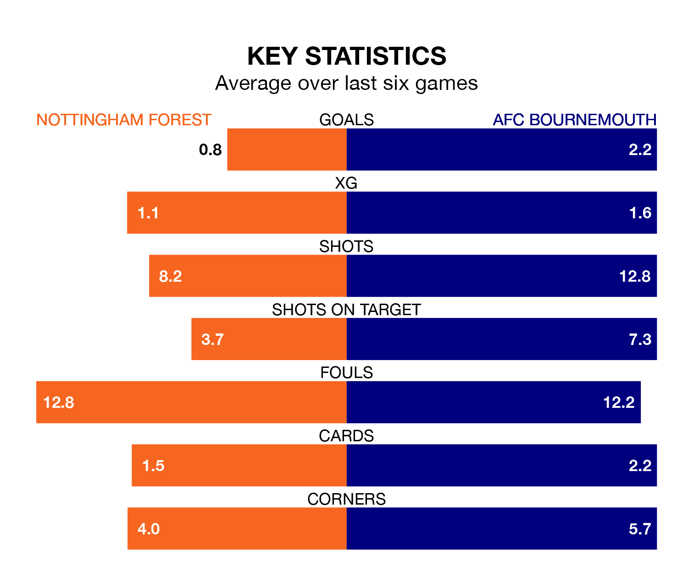

Nottingham Forest are on a terrible run ahead of hosting AFC Bournemouth at the City Ground on Saturday, with just one point collected from their last six games.
The Tricky Trees have picked up just one draw in their last six Premier League games, and face a Cherries side whose last six games have brought four wins and one draw.
Forest are 17th in the table after 17 games, of which they have won three and drawn five, earning 14 points.
Bournemouth are two places ahead of the Tricky Trees in 15th, with five wins and four draws putting them on 19 points.
With 17 goals in 17 games so far this season, the home team are scoring at below the league average rate with 1.0 goals per game. And they are conceding more than average, letting in 30 goals at a rate of 1.8 per game.
The Cherries are also below average scorers, with 1.3 goals per game, compared to a league average of 1.5. They have conceded 1.9 goals per game.
In Dominic Solanke, the visitors have one of the league's most on-form strikers so far this season. He has notched eight goals in 16 appearances, to sit sixth in the scoring charts.
His goal rate of one every 179 minutes is slightly quicker than that of Taiwo Awoniyi, Forest's top scorer with a goal every 168 minutes, and a total of four goals in 10 games.
In the last five years, Forest and Bournemouth have played each other on six occasions. Bournemouth won four of them and they drew twice.
On average, the Tricky Trees scored 0.7 goals and the Cherries 1.5 in those matches.
Their last meeting was on January 21, when they played out a 1-1 draw.
Forest's last match was on December 15, a 2-0 loss against Tottenham Hotspur.
Bournemouth beat Manchester United 3-0 last time out, on December 9, with Marcos Senesi, Philip Billing and Solanke-Mitchell on the scoresheet.
